![Genislab]() Genislab Technologies
Genislab TechnologiesHow to Download and Install Java Development Kit (JDK) on Windows
The Java Development Kit and Runtime Environment are needed to develop programs in Java. In order to compile a Java program, it is required to download and install the Java Development Kit (JDK) in Windows. Once the program has been compiled, we need the Java Runtime Environment (JRE) to run the program.
You can download the JDK installer (which includes JRE) by following the instructions given below.
- Visit Java SE download page at https://www.oracle.com/technetwork/java/javase/downloads/index.html You will see downloads page as shown in the image below.

- At the time of writing this article, you have the option to download the Oracle JDK (Java SE 11.0.2 – Option 1 in the screenshot above) or the Java JDK (Java SE 8u201 highlighted as option 2 in the screenshot above). Even though the Java JDK is at version 8 and Oracle JDK is at version 11, the Java SE 8u201 version will be sufficient for most of the developers and Selenium testers since the core features remain the same.
- Both Oracle JDK and Java JDK offer the same functionality and you can choose any one of them, we will choose the JDK option under Java SE 8u201. Click the Download button to proceed.
- The Java download page is displayed as shown in the screenshot below. Click the radio button next to Accept License Agreement. Then click the link in the Download column corresponding to your operating system.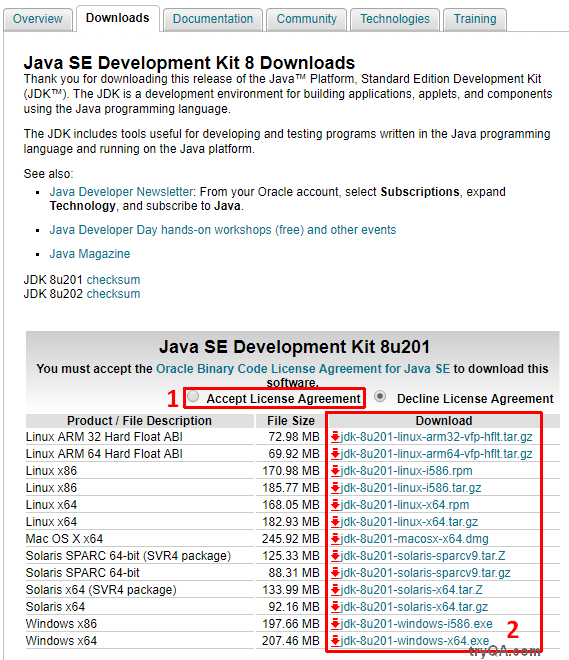
- If you have a 64 bit operating system, you can download the x64 versions. Users with 32bit operating systems should click the download links with i586 suffix (corresponding to product descriptions with x86 suffix).
- Clicking the link will start the download process. You may be prompted to choose the location where the file must be saved on your hard drive.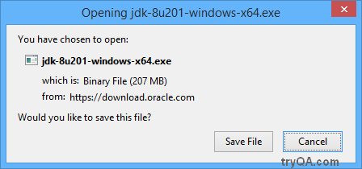
- Locate the downloaded EXE file on your hard drive and double click the file to start the installation.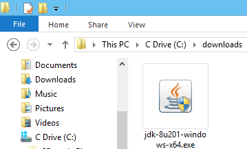
- As shown below, you will be prompted with a security dialog asking if you want to allow the program to make changes to your computer. Click Yes to proceed.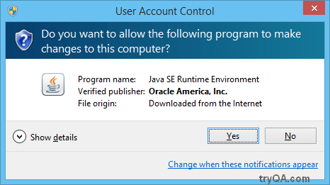
- Depending on your systems performance, it might take a few seconds for the below Java Installation Wizard dialog box to show up. Click the Next button to proceed further.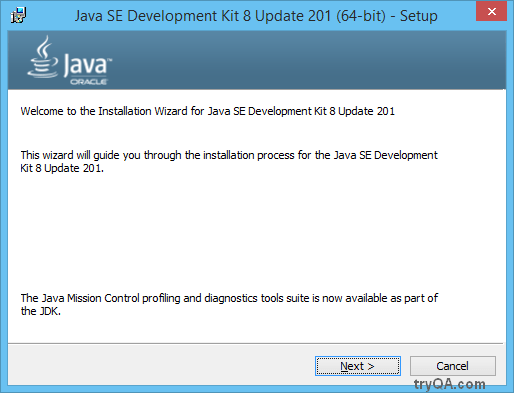
- By default, the next screen will allow you to install the Development Tools, Source Code and Public JRE. It is recommended not to change the default installation path. Click the Next button to continue.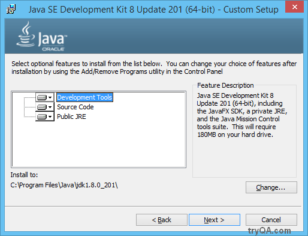
- Depending on your systems performance, it might take a few minutes for the first part of the installation to complete.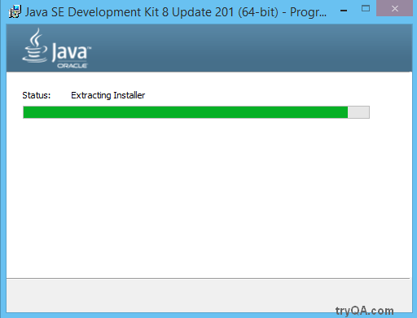
- Once the initial process is complete, you may also be asked to accept the change in license terms. Click OK to proceed. If you are not presented with this screen, simply ignore this step and go to the next step.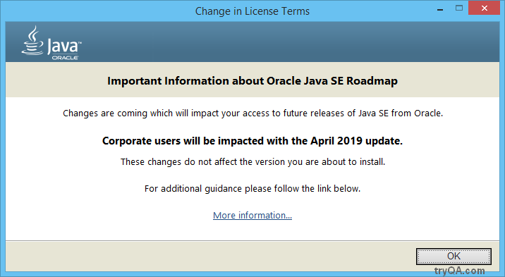
- Now you will be asked to choose the destination folder for the Java Runtime Environment (JRE). Its recommended to proceed with the default values and click the Next button.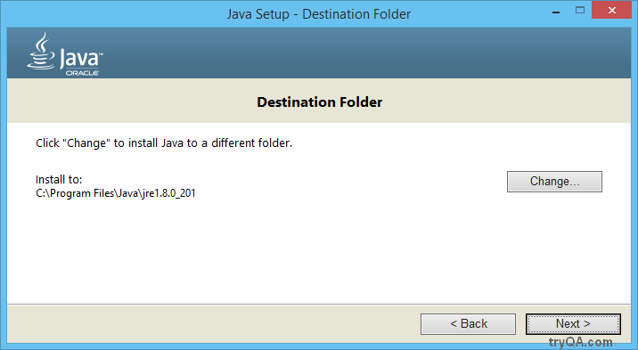
- Java will now be installed.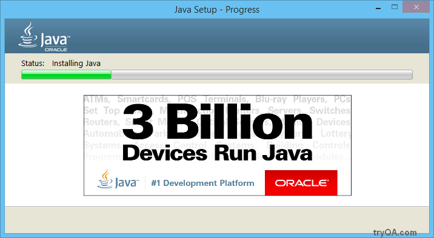
- Once the installation is complete, you will be presented with the dialog box shown below, confirming the completion. Click the Close button to close the dialog box.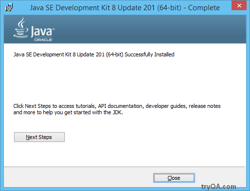
- The Java Development Kit and Java Runtime Environment are now installed on your computer.
Difference between : Java Runtime Environment (JRE) vs Java Development Kit (JDK)
Now that you know how to download and install Java, let us quickly understand the difference between the Java Runtime Environment (JRE) and the Java Development Kit (JDK).
- Normal users who are not developing Java / Selenium programs, only need to install the Java Runtime Environment (JRE)
- When most people say they are going to “install Java”, they are referring to the JRE
- The JRE allows you to run Java programs on your machine
- However, developers and testers who are working on Selenium or Java, need to download and install the Java Development Kit (JDK)
- The Java Development Kit (JDK) comes with the Java compiler, which is required to compile Java programs
- The JDK installer also includes with the JRE. During installation, you need to install both the JDK and the JRE
Tips
- Do not install the JRE from java.com, if you are planning to develop programs using Java, you need the JDK
- It is recommended to use the same version of JRE and JDK to avoid any issues. If you already have a JRE installed, its recommended to uninstall it and install the JRE which is included with the JDK. The JDK is listed as “Java SE Development Kit” in Programs and Features in Windows. JRE is simply listed as “Java 8 Update 201 (64 bit)”. Your version numbers may differ based on your installer.
- The look and feel of the dialog boxes may change from time to time but the process of installation will be similar.
- Sometimes, some versions of Java may have issues / incompatibilities. Sometimes, an API/method which was available in older versions, may be deprecated in newer versions. If everything seems to be in order but you still face issues, try uninstalling Java/JDK and installing an older version. This is done is rare cases but you may encounter this issue sometime in your career.
Other popular articles:
- Hello World – Write & Run Your First Java Program in Notepad & Cmd
- What is Portability testing in software?
- What is Configuration management tools?
- What is Beta testing?
- What is Test design tools in software testing?
Leave a Reply